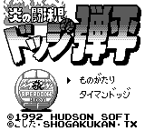

Dodge Danpei - Gameboy Games

- Company: Hudson
- Date Released: 24 April 1992
- Price (in yen): 4500
- Genre: Dodgeball simulation
Controls
- A button: Pass
- B button: Throw
- Start: [Not Used]
- Select: Pause
Anime Video Game Resource Center © 1998 by Luis A. Cruz